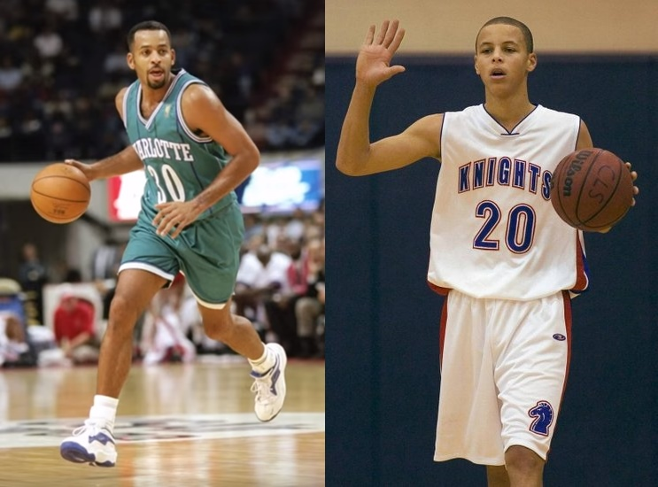
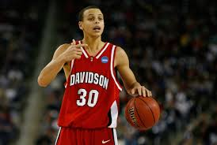
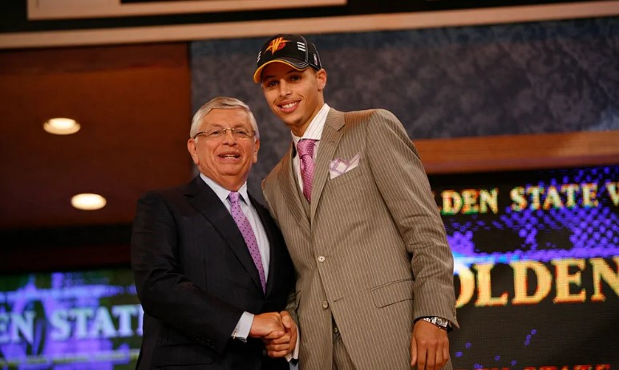
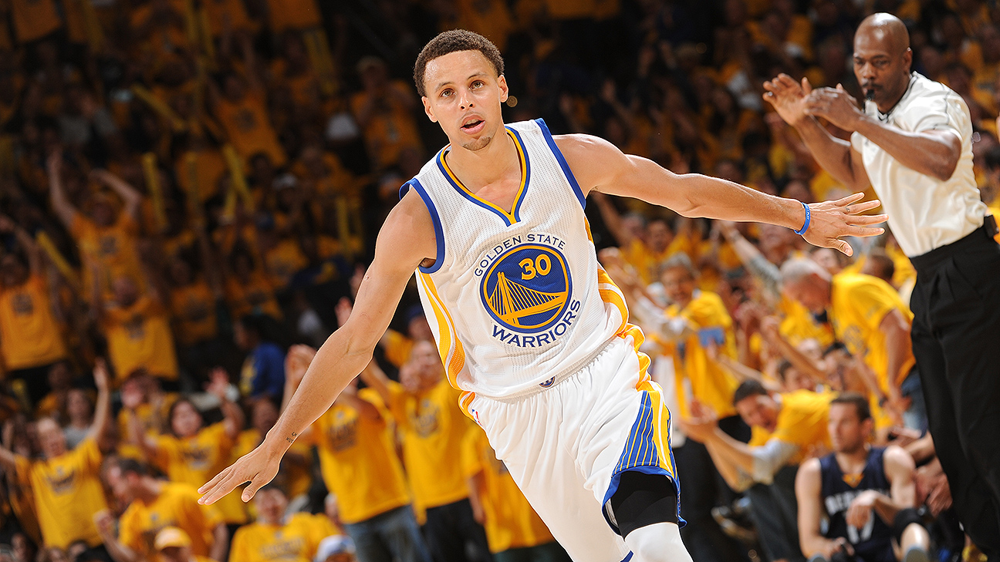
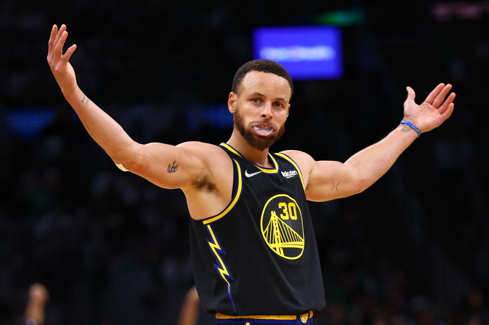

Stephen Curry於1988年3月14日出生在北卡羅來納州的亞克倫（Akron），父親Dell Curry是NBA的著名射手，母親Sonya Curry則是前排球選手。這樣的家庭背景讓Stephen從小就浸泡在體育氛圍中，尤其是籃球，幾乎成為他生活的一部分。從他會走路開始，Stephen就跟著爸爸去球場，模仿他的動作，練習投籃和運球。Dell常說，他的小兒子天生對籃球有著非凡的感覺，尤其是在投射這一塊，有著與生俱來的直覺。
然而，成長路上並非一帆風順。Stephen的身高和體格在年幼時期一直不算突出，甚至被許多教練和同齡球員忽視。當其他小孩開始在體育賽場上佔有優勢時，他因為體格瘦小，常常在激烈的對抗中吃虧。但這並沒有讓他放棄，反而激發出他的鬥志。他堅信靠技術和智慧，自己同樣能在球場上取得成功。每天放學後，他都會跑去籃球場，花上數小時投三分球、練習控球，尤其喜歡模仿當時勇士隊的控球後衛的打法。
進入小學和初中階段時，Stephen的投籃能力日漸精湛，尤其是中長距離投籃漸成為他的標誌。教練和隊友都開始注意到這個瘦小的孩子，說他有著不一樣的比賽視野和出色的手感。雖然他的運動能力還無法與頂尖球員匹敵，但他的技術細膩，籃球智商高，懂得利用空間和節奏去得分。
高中時期，Stephen就讀Charlotte Christian School，這是他籃球生涯的關鍵轉折點。學校的教練給了他很多機會，儘管身材依舊瘦小，但他的三分球準度和突破能力讓他成為隊上的核心。球場上，他靈活穿梭，能在防守嚴密的情況下命中關鍵投籃。教練經常稱讚他：「他的投籃簡直是天賦，是我們隊伍中最重要的武器。」但是，即使如此，他依然未能被許多頂尖大學籃球隊看中。許多教練擔心他的體格不夠強壯，無法承受大學甚至職業籃球的對抗強度。
這段期間，Stephen每天都會投入大量時間練習，無論是投籃還是體能訓練，總是比隊友更早到球場、更晚離開。他深知自己必須比別人更努力，才能彌補先天的不足。這種不服輸的精神，成為他日後成功的根基。家人和教練也給了他很大支持，常常陪著他一同訓練，幫助他克服身體上的弱點。這段苦練的時光，不只磨練了他的技術，也塑造了他堅強的心態和永不言敗的決心。
在高中畢業時，Stephen已經成為學校的籃球明星，但外界對他大學和職業籃球的前景依然存有疑慮。他自己也知道，未來的路會很艱難，但他下定決心，不管多困難都要繼續追逐籃球夢想。這段早期成長的故事，不僅展現了他的天賦，更重要的是他的努力、毅力與對籃球的無限熱愛。
高中畢業後，Stephen Curry決定進入戴維森學院（Davidson College），這是一所位於北卡羅來納州的中小型學校，並非籃球強校，也不像其他籃球明星進入的名校那樣聲名顯赫。這個決定部分來自於戴維森給予他充分上場機會的承諾，也因為這裡的教練Bob McKillop相信他有成為頂尖球員的潛力。
Stephen Curry在2009年NBA選秀中以第七順位被金州勇士隊選中。這一順位對許多人來說並不算高，尤其是對一個身材瘦小的後衛而言。當時許多球隊對他的未來存有疑慮，擔心他無法適應NBA的激烈對抗和高強度比賽節奏。但勇士隊教練和管理層看中了他的投射能力和籃球智商，願意給他機會成長。
2015年勇士奪冠後，Stephen Curry成為全聯盟焦點，他不斷刷新個人數據和聯盟紀錄，尤其是在三分球方面。接下來幾年，勇士隊成為聯盟的霸主之一，連續闖入總決賽，2017年和2018年勇士隊再度奪冠，Stephen都在球隊中扮演核心角色。
2019年之後，Stephen Curry經歷了職業生涯的又一個重要階段。隨著勇士隊核心陣容改變和年輕球員的加入，他的角色也開始多元化。面對新的挑戰，Stephen依舊保持超高的競技狀態，不斷刷新三分球和得分紀錄。
